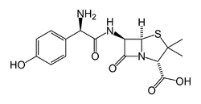
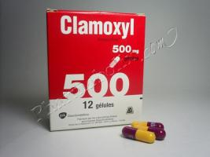

V. Diagnostic
Le diagnostic biologique des infections à Streptocoque A repose sur la mise en évidence de la bactérie dans des lésions ou sur des tests sérologiques (détection d'anticorps antistreptococciques dans le sérum).
1) Examen bactériologique
Les prélèvements de sécrétions, pus, sérosités doivent être rapidement ensemencés car le germe est fragile dans le milieu extérieur. L'examen microscopique du
prélèvement permet de voir les cocci en chaînettes, à Gram positif. Les colonies, petites, apparaissent en 24 heures sur gélose au sang frais et sont entourées
d’une zone d'hémolyse franche et complète (ß-hémolyse) très évocatrice. L'absence de catalase et d'oxydase confirme le genre Streptococcus et l’étude antigénique
caractérise le groupe A (test d’agglutination sur particules de latex, appelée technique de Lancefield). Les Streptocoques du groupe A se distinguent parmi les
streptocoques ß hémolytiques par leur sensibilité à la bacitracine.
Depuis 2002, on peut recourir à un test de diagnostic rapide (TDR) grâce à un prélèvement obtenu par écouvillonage pharyngé : il s’agit d’une immuno-chromatographie
présentée sur une bandelette, mettant en évidence une réaction antigène-anticorps. Ce test met en évidence des antigènes de paroi spécifiques de Streptococcus
pyogenes, ce qui permet de différencier une angine bactérienne d’une angine virale. Ce test, qui prend seulement quelques minutes, peut être réalisé par un
médecin (au cabinet ou en visite à domicile) ou à la pharmacie.
2) Sérologie
La sérologie est la recherche dans le sérum du patient d’anticorps antistreptococciques : antistreptolysine O (ASLO), antistreptodornase (ASD), antistreptokinase
(ASK) ou antihyaluronidase.
Cependant, tout le monde ou presque est porteur d'anticorps ASLO à des titres faibles. Par ailleurs, le taux des ASLO s'élève dix jours après la survenue de
l'infection mais peut rester normal dans 20 à 30 % des infections streptococciques authentiques et n'est pas modifié au cours des atteintes cutanées. En outre,
la réaction risque d'être faussement négative si le sérum est ictérique ou s'il est riche en lipides ou cholestérol. Les infections à streptocoques C et G
s'accompagnent également d'une élévation des ASLO.
Le titrage des ASLO n'est donc ni sensible ni spécifique et seule la constatation de titres élevés ou d'une ascension des taux en quelques jours a une signification
clinique. Les antistreptodornases sont plus spécifiques et plus sensibles. Enfin, il existe des tests globaux détectant, en une seule manipulation, tous les
anticorps antistreptococciques.
La sérologie antistreptococcique est utile pour confirmer l'étiologie streptococcique de manifestations cliniques évoquant un syndrome post-streptococcique.
VI. Thérapie
Cette bactérie est sensible à la pénicilline : aucune résistance n’a été décrite pour le moment. Le traitement de choix est donc l’Amoxicilline
(pénicilline A), ou la pénicilline G par voie injectable, ou la pénicilline V (Oracilline®) par voie orale.
Ces 3 antibiotiques font partie de la grande famille des Pénicillines, ce sont des antibiotiques à noyau ß-lactame
|  |  |
| Amoxicilline | |
| Pénicilline G | Pénicilline V |
Les Pénicillines agissent sur les PLP (Protéines Liant les Pénicillines) qui sont des enzymes intervenant dans la biosynthèse du peptidoglycane (paroi bactérienne). Les Pénicillines inhibent principalement une transpeptidase par liaison covalente entre le noyau ß-lactame et les résidus sérine de l'enzyme. Celle-ci est impliquée dans la dernière étape de synthèse du peptidoglycane. Les Pénicillines inhibent donc la biosynthèse du peptidoglycane, entraînant un arrêt de croissance de la bactérie.
| En cas d’allergie, on utilise les macrolides (par exemple l'Erythromycine) mais 15% de cette souche possède une résistance. Ces antibiotiques inhibent une sous-unité ribosomale (50S) ce qui conduit à une perturbation de la synthèse protéique et donc un arrêt de croissance bactérienne. | |
| Erythromycine |
- 1ere intention : amoxicilline par voie orale (Clamoxyl®, Agram®, Bristamox®…) pendant 6 jours
- En cas d’allergie aux Pénicillines :
- Céphalosporines de 2ème génération (Cefuroxime pendant 4 jours) ou de 3ème génération (Cefotiam, Cefpodoxime pendant 5 jours)
- Macrolides : Clarithromycine, Josamycine, Azithromycine (5 jours)
Les céphalosporines font partie de la familles ß-lactamines, ils ont donc le même mécanisme d'action et la même cible moléculaire que les Pénicillines (inhibition de la synthèse du peptidoglycane).
 |
|
| Cefuroxime (Céphalosporine de 2ème génération) |
Cefpodoxime (Céphalosporine de 3ème génération) |
Les aminosides sont inactifs seul, dû à un défaut de pénétration de l’antibiotique, mais ils possèdent une action synergique avec la pénicilline dans les
infections graves.
Traitement des complications : anti-inflammatoire + pénicilline retard (formes galénique à longue durée d’action).
VII. Vaccination
Il n’existe pas de vaccin contre cette bactérie à ce jour.
VIII. Bibliographie
http://www.phac-aspc.gc.ca/lab-bio/res/psds-ftss/strep-pyogenes-fra.php
http://emedicine.medscape.com/article/228936-overview#a2
https://www.gov.mb.ca/health/publichealth/factsheets/necro_fasciitis.fr.pdf
Paediatr Child Health Vol 4 No 1 January/February 1999